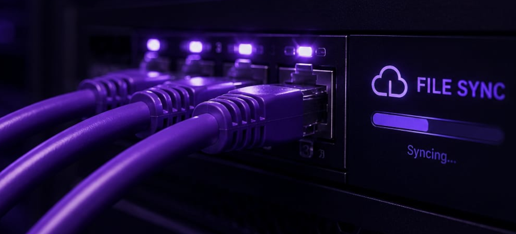

Keeping client software current without disruption.
A controlled maintenance process that prepares updates, protects existing information, and makes support easier for both the client and developer.
Discuss reliable maintenance
Good software also needs a dependable life after launch.
Client applications change over time: improvements need to be delivered, problems investigated, and important information protected. Asking clients to move files manually or guide every maintenance step creates interruptions and increases the chance of mistakes.
I needed a repeatable way to support installations remotely while retaining a clear record of changes and a safe path back if an update did not behave as expected.
I turned maintenance into a controlled, traceable process.
I created a tool that compares the intended version with the client installation, transfers only what is needed, verifies that files arrive correctly, and preserves important data before changes are applied.
Clear records make support easier, while built-in safeguards reduce the need for the client to participate in routine technical work. The process remains deliberate rather than fully automatic, so unusual situations can still be reviewed.
Less disruption for clients and better long-term ownership.
Routine maintenance can be handled more consistently, with fewer manual hand-offs and better preparation for recovery. Clients receive updates with less interruption, and support begins with useful information rather than guesswork.
For recruiters and prospective clients, this project shows that I think beyond launch day. I build for continued operation, responsible support, and the trust that develops when software remains maintainable.